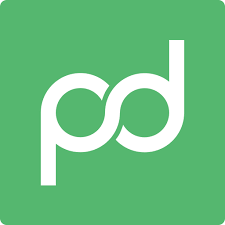
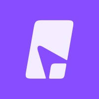

how rallyup turns b2b founders and leadership teams into linkedin engines — the pipeline, the reach, and the results, without taking real time off their plates.


“Give it a try — the investment isn't huge and the upside is substantial. For a lot of companies, social presence is the difference between being known and not, and being known can be a jumping-off point for deals, partnerships, investors. For B2B, it's a no-brainer.”